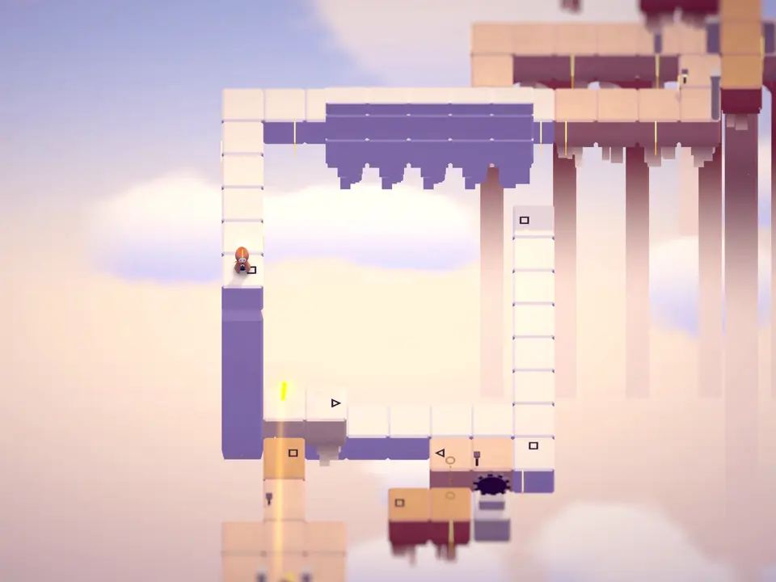

같은 문양이 겹치면, 길이 된다
길 끝에는 ○ △ □ 문양이 새겨져 있습니다. 시점을 돌려 떨어진 두 길의 같은 문양을 화면에서 겹치면, 링커는 3D 공간에서는 떨어져 있는 그 사이를 실제로 건너갑니다.
공간의 착시로 길을 만들고, 퍼즐을 풀며 세모네모의 세계를 탐험하세요.
클릭이나 터치로 걷고, 드래그나 스와이프로 시점을 돌립니다.

큐브 허브에서 초원까지
떠 있는 큐브의 면마다 장이 하나씩 있습니다. 장마다 하늘과 돌의 색, 음악, 새로운 장치가 바뀌고, 그늘이 되어 버린 링커들을 되돌리기 위해 흩어진 코어 조각을 모으는 여정이 이어집니다.
 STARTCUBE HUB
STARTCUBE HUB CHAPTER 1FRAGMENTS
CHAPTER 1FRAGMENTS CHAPTER 2PATHS
CHAPTER 2PATHS CHAPTER 3FADING
CHAPTER 3FADING CHAPTER 4SIGNS
CHAPTER 4SIGNS CHAPTER 5GATHERING
CHAPTER 5GATHERING CHAPTER 6DARK
CHAPTER 6DARK CHAPTER 7MEADOW
CHAPTER 7MEADOW
스테이지와 맵 에디터
여정 밖에서는 장치별로 묶인 퍼즐 스테이지를 풀고, 맵 에디터에서 블록과 문양, 장치를 놓아 직접 퍼즐을 만들어 바로 플레이할 수 있습니다.


플레이하기
- AndroidGoogle Play출시 준비 중
- Windows PCSteam출시 준비 중
출시되면 이곳에 다운로드 링크가 생깁니다.